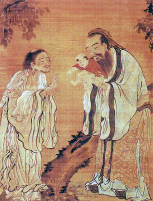

Sacred Texts Confucianism
Buy this Book at Amazon.com
|

The Baby Confucius is Presented to Lao Tsu (Public Domain Image) |
Confucianism and Its Rivalsby Herbert A. Giles[1915] |
China is home to two major world religions, Confiucianism and Taoism, and also played an important role in the historical development of a third, Northern Buddhism. Eventually, Confucianism became the state religion, and, purged of metaphysical aspects, the dominant Chinese religion until the 20th century. Other religions, including Christianity, Judaism, and Islam, have all had indigenous expressions as well.
Giles covers the entire history of Chinese religion in this book, which was originally delivered as one of the Hibbert lectures in 1914. Herbert Allen Giles (b. Dec. 8, 1845, d. Feb. 13, 1935), was a British diplomat and an old China hand. He is best known for his role in developing the Wade-Giles system of transliterating Chinese. Giles was the father of Lionel Giles, who was also a distinguished orientalist, and translator of Sun Tzu's Art of War, among others.